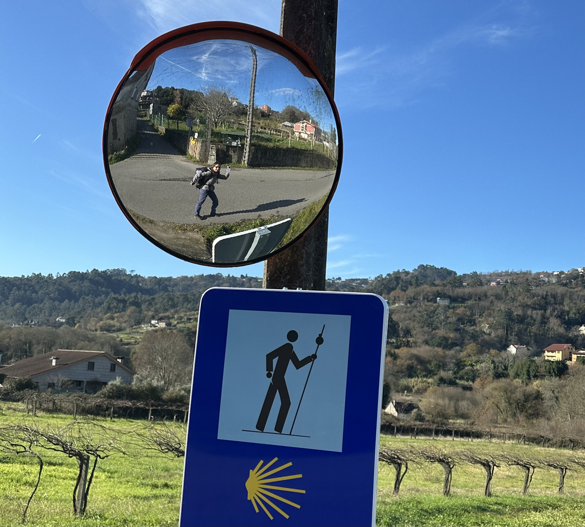
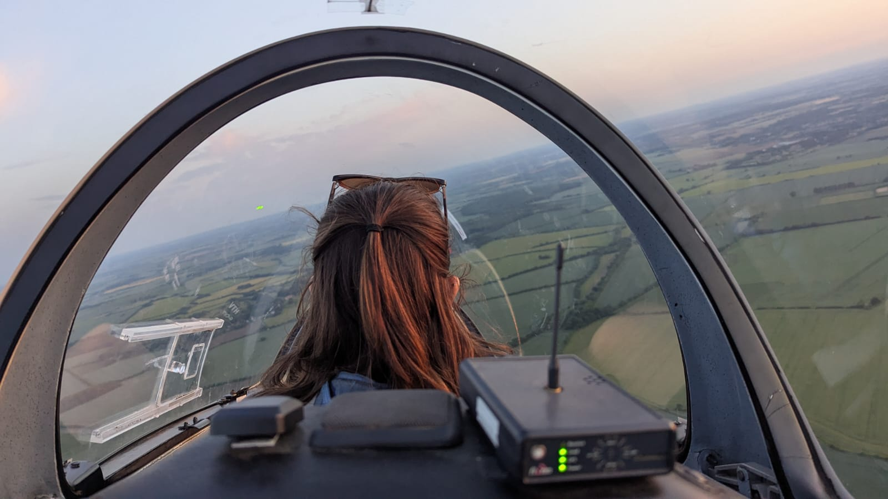
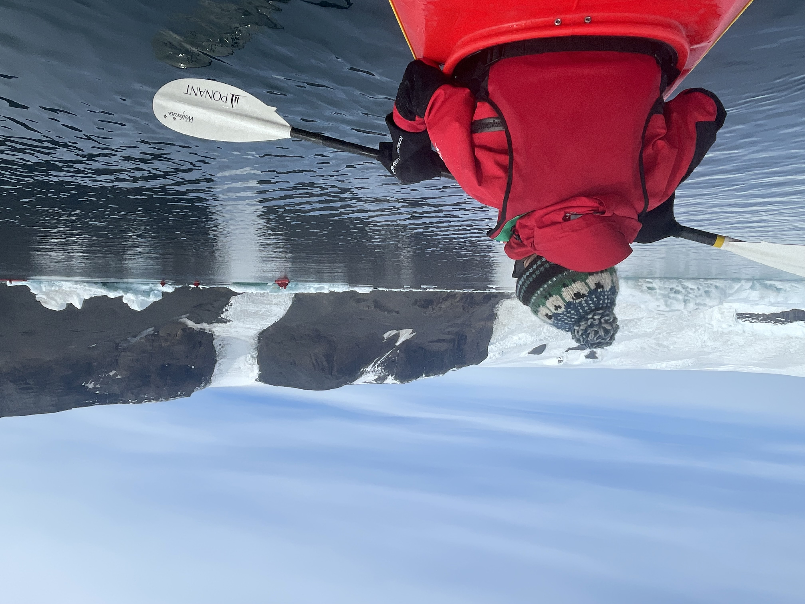

Life as an anomaly against a systemic abiotic baseline
Nature Astronomy, in press.
I am a postdoctoral fellow in the Biogeochemistry Unit of the Department of Environmental Science at Stockholm University. I model methane emissions from subsea permafrost on the Arctic Ocean shelves under present and future conditions as part of the SuPerTip project.
I grew up in Nicosia, Cyprus, and moved to the UK after high school to study Physical Natural Sciences (BA/MA) and Astrophysics (MSc) at Trinity College, University of Cambridge. I then took two years out before my PhD, working remotely as an ML lead at a startup and travelling wherever COVID allowed (see the non-research section below).
I completed my PhD at the Institute of Astronomy, University of Cambridge. My thesis, Venus as a baseline in the search for life, reframed a central challenge in astrobiology: to find life, we must first define lifelessness. Life may be recognisable as a deviation from abiotic expectations: a potentially biological anomaly. Venus is Earth's nearest planetary twin and is uninhabitable today, making it a natural control case. I studied Venus's atmosphere, volcanism, and weathering to understand the planetary processes that shaped its environment. This work culminated in a framework for searching for life—and its absence—beyond our Solar System.
Nature Astronomy, in press.
White paper submitted to the UK Space Agency’s “UK Space Frontiers 2035” initiative, 2026
Scrivener-Wiley, forthcoming chapter
Read about it in the Guardian, or hear me talk about it on BBC World Service Science In Action (among more than 750 pieces of media coverage worldwide).
My current research is part of the Bolin Centre for Climate Research, a multidisciplinary consortium of scientists studying Earth’s climate.
Planetary Chemistry: We study the evolution and habitability of planets in the solar system and around other stars.
Planetary Astrochemistry Lab: We experimentally simulate planetary environments and use them to test prebiotic chemistry.
Leverhulme Centre for Life in the Universe: We aim to develop a deeper understanding of life, its emergence, and its distribution in the Universe.
I favour the micro-adventure: cycling day trips, weekends away scrambling with friends, bouldering, or waking early for a long walk in search of coffee and a pastry. Also the macro- when I can: prior to starting my postdoc, I spent 6 months bikepacking Europe, China, and Vietnam.



